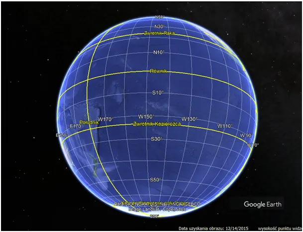
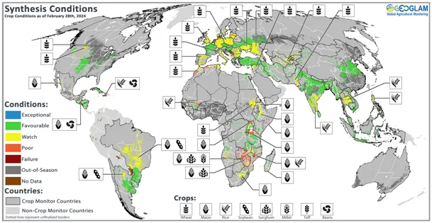
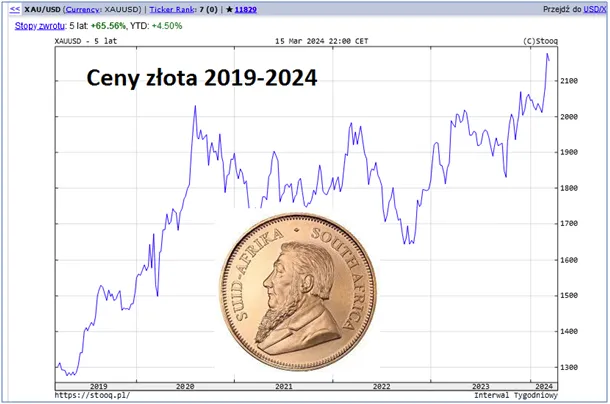
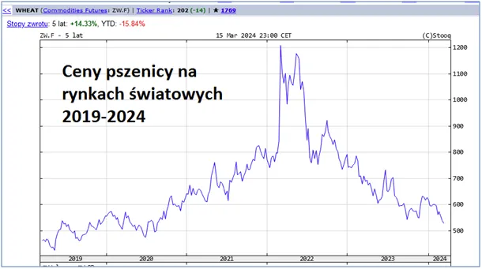

Jak mocne leki trzeba brać by twierdzić, że “Ziemia płonie”?
Z powodu pozycji kontynentów żywność produkuje się głównie na półkuli północnej, gdy odpowiednio spojrzeć na globus południowa półkula to w większości ocean. Dlatego zawsze na wiosnę, po ocenie stanu upraw krystalizują się ceny płodów rolnych, głównie zbóż.

Jak widać na mapce kondycja upraw jest bardzo dobra, ceny pszenicy na rynkach światowych lecą na łeb na szyję, ceny ropy mamy znacznie niższe, niż rok temu. Dolar tani jak barszcz, a wszystkie surowce kupuje się w dolarach, a za oknem drożyzna.

Nie zrobię odkrycia, że jedynym powodem jest drukowanie pustego pieniądza w okresie zastoju gospodarczego, przez ostatnie 5 lat świat zachodni przy zmniejszonej produkcji radykalnie zwiększył ilość gotówki w obiegu, co musiało się przełożyć na jej niską wartością w stosunku do dóbr i usług, na które się ją wymienia. Prawo podaży i popytu jest banalnie proste i działa zawsze, bez ekonomistów i ministrów, wystarczy rolnik i rzemieślnik i już mamy gospodarkę.

Złoto mówi po cichu sprawdzam i odpowiada wszystkim profesorom ekonomi: rekord wszechczasów! Mało media o tym mówią, wyraźnie strach przed paniką każe wyciszać te dyskusję, zaklina się lud "presjami banków centralnych" i innymi pustymi frazesami.

Rajd cen bitcoina wyniósł kolejną piramidę finansową do absurdalnych rekordów. Ten mityczny "antysystemowy" balon, to oszustwo stulecia. Najbardziej się zdziwią wszyscy, którzy wierzą w anonimowość transakcji w sieci. Każdy grosik tych cyfrowych transferów jest śledzony i opisany jak żadne dobra w świecie fizycznym.

W chwili, gdy państwa przejdą na walutę cyfrową nie będą tolerować konkurencji, jednym przyciśnięciem na klawiaturze wyłączą tę zabawkę. Filozofowie powiedzieli wiele głupstw, ale czasem mówią coś do rzeczy: "Nie ma takiego okrucieństwa, ani takiej niegodziwości, której nie popełniłby skądinąd łagodny i liberalny rząd, kiedy zabraknie mu pieniędzy." W 1933 w USA skonfiskowano wszystkim całe złoto za marne odszkodowanie. Całkiem niedawno, w 2013 r, na Cyprze wyczyszczono obywatelom wszystkie konta bankowe powyżej 100 tys. euro. Oszczędności całych pokoleń zostały przejęte przez państwo należące do UE. Posiadacze większej gotówki stracili ponad 60% swoich wkładów.
Poza okradzionymi nikt w Europie nie pisnął, w tym obrońcy "wartości europejskich".
Paweł Klimczewski